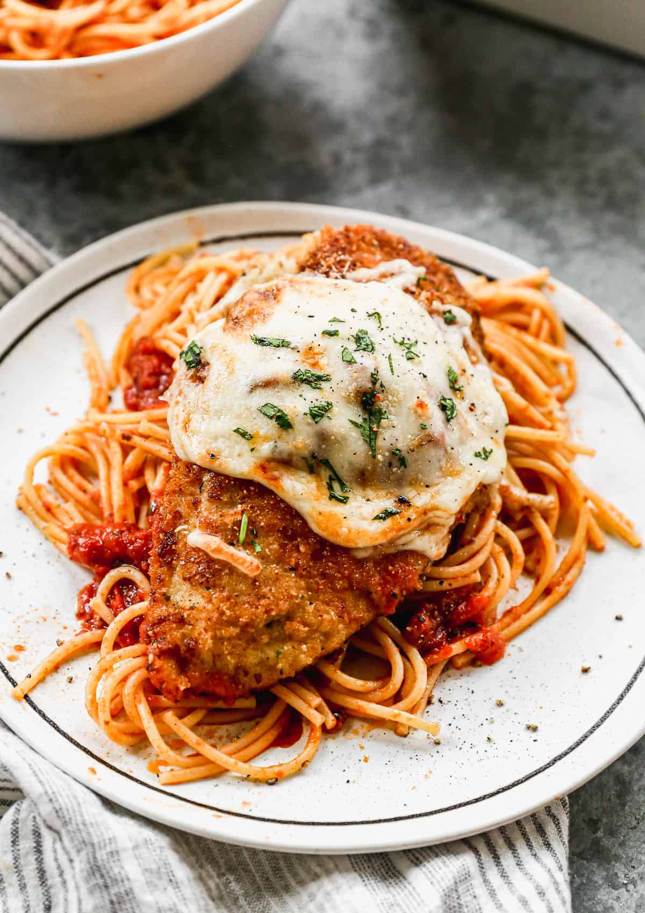

Back to Home
Chicken Parmesan

Description
Crispy breaded chicken cutlets baked with rich tomato sauce and melted mozzarella cheese.
Follow The Steps bellow to prepare The Ingredients and bake this dish.
Ingredients
- Chicken:
- 2 chicken breasts(sliced in half horizontally to make 4 cutlets)
- 1/2 cup flour
- 1 egg(beaten)
- 1 cup breadcrumbs
- 1/2 cup grated parmesan cheese
- 2 tbsp olive oil
- Topping:
- 1/2 cups marinara/tomato sauce
- 1/2 cup shredded mozzarella cheese
- fresh basil or parsley.
Steps to follow
- Bread the chicken:Mix breadcrumbs and parmesan in one bowl.Place flour in a second bowl, and beaten egg in a third. Dredge chicken cutlets in flour,dip in egg,then coat thoroughly in breadcrumbs.
- Pan-Fry:Heat olive oil in a pan over medium-hight heat. fry cutlets for 3-4 minutes per side until golden brown and crispy.
- Bake:Preheat oven to 2000C(4000).Place fried cutlets in a baking dish.Spoon tomato sauce over each cutlet and top generously with mozzarella cheese.Bake for 10-12 minutes until cheese is melted and bubbly.